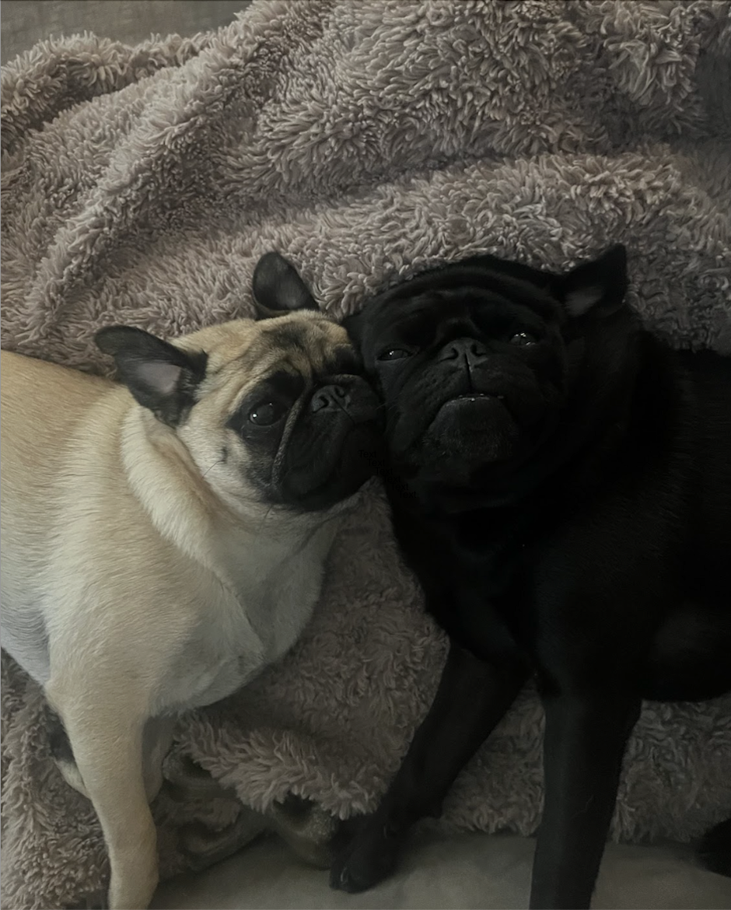

400px H and W, 2px red border.50% Max W and Max H, 100% grayscale filter.Normal width and Height (30% width, auto height), border radius 10px to round edges.400px width, 50% border radius.400px W and H, object-fit is set to contain.Normal width and Height (30% width, auto height), 3px blur.Normal width and Height (30% width, auto height), box-shadow 5px 10px is used.Normal width and Height (30% width, auto height) Opacity set to 50%.